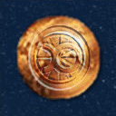

Forums galactiques > Assemblée Galactique : diplomatie officielle > Invitation à intégrer une association
Pages : 1
| Earendil Respect diplomatique : 28 22/09 ETU 19:32 | Score : 7 Détails Bonjour à tous,
Je me nomme Earendil.Je viens juste d'intégrer une coalition créé et dirigée par Aerÿn.Toutefois, j'ai été étonné par la faible affluence.Serais-je le seul nouvel arrivant de cette galaxie? Ou bien les nouveaux arrivants ne sont que peu intéressés? Pour être plus sérieux, je sais que de nombreux ignorent jusqu'à l'existence de l'Assemblée.Car la plupart découvrent petit à petit et donc n'osent pas s'aventurer dans les endroits qu'ils ne connaissent pas. J'en ai déja parlé auparavant et bien que je sache que ce problème peut paraitre infiniment ridicule comparé aux troubles actuels (dus pour la plupart au manque de respect de certains commandants), je trouve qu'il devient nécessaire voire obligatoire d'avertir dés l'arrivée d'un nouvel immigrant les possibilités qui s'offrent à lui. Cesco, je m'adresse à vous: Loin de moi l'idée de vous accaparer.Mais aprés tout, un commandant se rebelle contre les autorités en place s'il les trouve incompétentes.Si, dés qu'il arrive, il est mis au courant et commence à venir prendre place parmi nous ici même,il sera au courant de ce qui se passe aux portes de son empire momentanément protégé par la fermeture de son système. Je pense que nous devons les avertir par quelque moyen que ce soit. Ainsi, les admirables initiatives comme celle d'Aerÿn qui n'ont pour but que d'aiguiller les nouveaux ne se retrouveront pas vierges (ou quasiment) de réponses. Merci de votre attention, Earendil | ||
| Tarul Respect diplomatique : 6 23/09 ETU 10:56 | Score : 1 Détails Le peu d'intéret que peuvent portés les nouveaux commandants vient, à mon avis, du fait qu'ils ne connaissent pas la technologie d'hyperfusion et que leur moyen de communication sont limités essentiellement à leur système. Enfin les nouveaux commandants pensent sans doutes a se développer un minimum avant de s'ouvrir au monde. C'est en tout cas le chemin que j'ai emprunté avant d'arrivé sur l'assemblé galatique.
Cordialement. | ||
| C.H.0.A.M. Respect diplomatique : 202  23/09 ETU 11:16 | Score : 1 Détails
Un hologramme scintille doucement. Une fine silhouette apparaît, son visage aux traits à peine esquissés s’anime légèrement tandis qu’un murmure rauque se fait entendre, inaudible et incompréhensible. Le traducteur automatique prend le relais de sa voix métallique et monocorde. Bonjour à tous et toute, Il est vrai que peut de nouveaux commandants prennent pas le temps de consulter l’Assemblée. Peut-être attendent-ils de se développer ou peut être pour d’autres raisons... Cette ASBL à justement été créée pour les aider à prendre pied dans cette galaxie. Nous savons que la technologie de l’hyperfusion n’empêche en rien les transmissions holographiques... Bien entendu, s'ils ne viennent pas prendre des nouvelles en ces lieux, ils ne peuvent pas savoir que cette association existe. Une solution simple pourrait être appliquée, le bouche-à-oreille. Si des commandants rencontrent de nouveaux migrants en difficulté et en proie à divers questionnements, ils peuvent toujours les informer de l’existence de cette asbl. Voici notre avis sur la chose. Nous vous remercions de votre attention. La silhouette se retira lentement tandis que l’hologramme diminuait d’intensité. | ||
| Earendil Respect diplomatique : 28 23/09 ETU 14:49 | Score : 0 Détails Je suis tout à fait d'accord avec le système d'auto protection,toutefois se protéger contre l'inconnu est beaucoup moins efficace que de connaitre les dangers à venir...
|
Pages : 1
Forums galactiques > Assemblée Galactique : diplomatie officielle > Invitation à intégrer une association